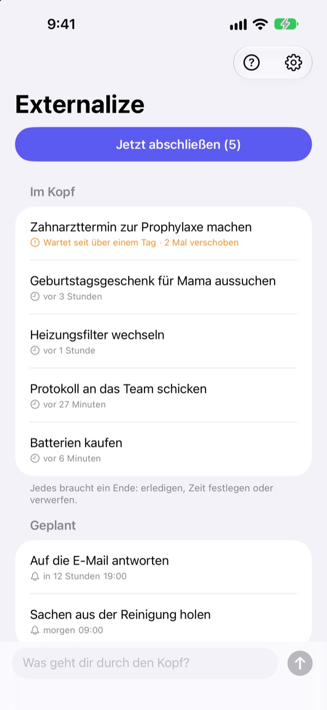
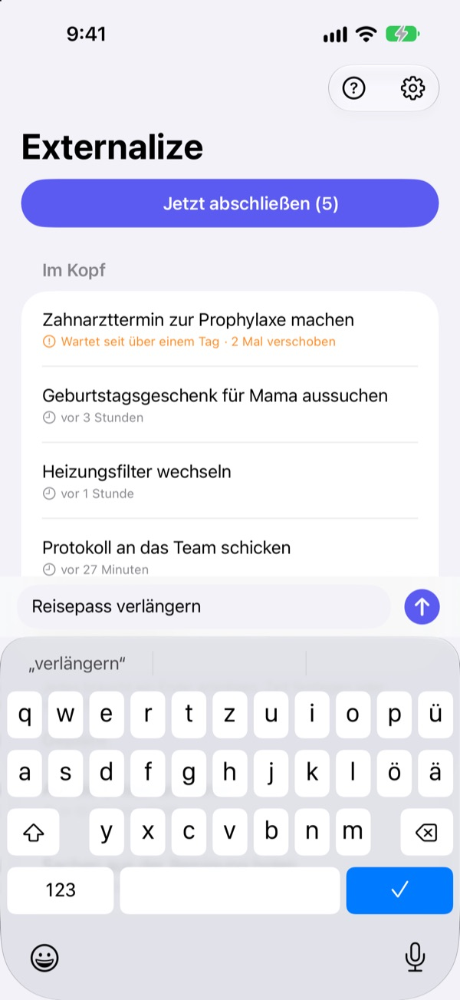
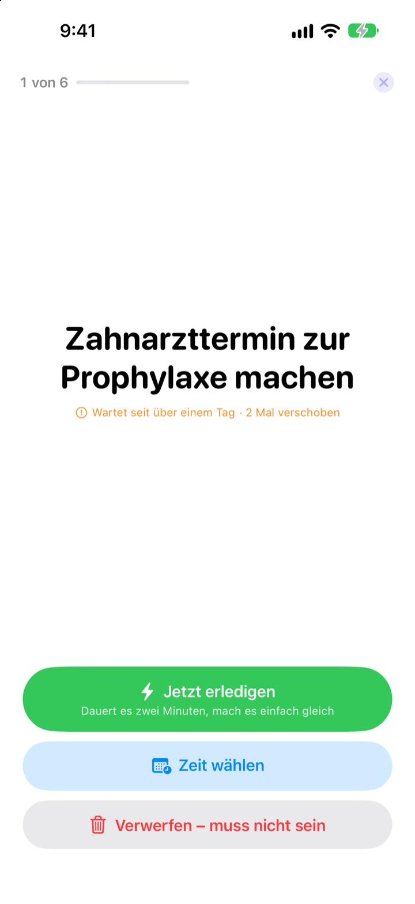
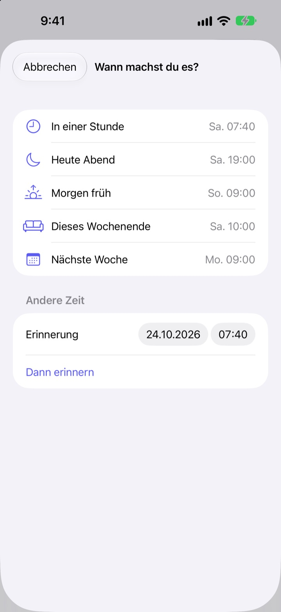

Jetzt notieren.
Abends abschließen.
„Ach ja, das muss ich noch …“ Schreib es in ein paar Worten auf und lass es los. Abends gehst du durch, was übrig ist, Punkt für Punkt.
Alle Funktionen sind kostenlos. Kein Konto, keine Anmeldung.

Probier es hier aus
Schreib etwas auf, das dir im Kopf herumgeht, oder tippe auf ein Beispiel. Dann auf „Jetzt abschließen“ und jedem Punkt ein Ende geben.
Auch Kleinkram belegt Platz im Kopf
Unter der Dusche, an der roten Ampel, kurz vorm Einschlafen: „Das muss ich ja noch erledigen.“ Nichts zum Aufschreiben in der Nähe, also hältst du es fest, und das, was du gerade tust, leidet darunter. To-do-Apps wollen erst eine Liste und ein Fälligkeitsdatum, und schon wird das Aufschreiben selbst zur Aufgabe.
Drei Sekunden, dann loslassen
App öffnen und unten in die Zeile tippen. Keine Liste, kein Ordner, kein Fälligkeitsdatum.
Ein Tipp aufs Sperrbildschirm-Widget öffnet eine leere Zeile. Sag zu Siri In Externalize merken oder leg es auf die Aktionstaste, dann ist es gespeichert, ohne die App zu öffnen.

Abends Punkt für Punkt abschließen
Ist noch etwas offen, erinnert dich die App einmal um 21 Uhr. Ist alles erledigt, bleibt sie still.
Beim Abschließen kommt ein Punkt nach dem anderen groß auf den Bildschirm. Wähle „Jetzt erledigen“, „Zeit wählen“ oder „Verwerfen“, und der nächste erscheint. Dauert es nur zwei Minuten, starte den Timer und erledige es sofort.

Nichts bleibt liegen
Wähle „In einer Stunde“, „Heute Abend“, „Morgen früh“, „Dieses Wochenende“ oder „Nächste Woche“, dann meldet sich der Punkt genau dann wieder. In der Mitteilung tippst du direkt auf „Erledigt“, „Morgen früh“ oder „Verwerfen“.
Was länger als einen Tag wartet oder immer wieder verschoben wird, ist markiert. So fällt auf, was ständig liegen bleibt.

In drei Schritten loslegen
- 1
Aufschreiben
Ein paar Worte in der App, im Sperrbildschirm-Widget oder über Siri, was gerade am nächsten ist.
- 2
Mitteilungen erlauben
Die App fragt einmal, wenn du zum ersten Mal etwas notierst. Darüber kommen die Abenderinnerung und deine gewählten Zeiten.
- 3
Abends abschließen
Tippe auf die Erinnerung oder auf „Jetzt abschließen“ und gib jedem Punkt ein Ende.
Direkt in der Liste
- Auf einen Punkt tippen
- „Erledigt“, „Zeit wählen“ oder „Verwerfen“ wählen
- Nach rechts streichen
- Erledigt (verschwindet aus der Liste)
- Nach links streichen
- Verwerfen, oder mit „Planen“ eine Zeit wählen
- Jetzt abschließen
- das Übrige Punkt für Punkt durchgehen
- In Externalize merken
- zu Siri sagen, ohne die App zu öffnen
- Einstellungen ▸ Abenderinnerung
- Uhrzeit ändern oder ausschalten
Beim Planen heißt „Heute Abend“ 19 Uhr, „Morgen früh“ 9 Uhr, „Dieses Wochenende“ Samstag 10 Uhr und „Nächste Woche“ Montag 9 Uhr. Du kannst auch selbst Datum und Uhrzeit wählen.
Häufige Fragen
Kann ich etwas notieren, ohne die App zu öffnen?
Ja. Sag zu Siri In Externalize merken, Siri fragt nach, was du notieren willst, und speichert es. Leg den Kurzbefehl „Notieren“ in den Einstellungen auf die Aktionstaste, dann reicht ein Druck.
Wie füge ich das Sperrbildschirm-Widget hinzu?
Halte den Sperrbildschirm gedrückt, tippe auf „Anpassen“ und wähle den Sperrbildschirm, tippe auf den Widget-Bereich und füge Externalize hinzu. Ein Tipp öffnet eine leere Zeile, und du siehst, wie viele Punkte noch offen sind. Für den Home-Bildschirm gibt es ein kleines Widget.
Kann ich die Abenderinnerung ändern oder ausschalten?
Tippe oben rechts auf das Zahnrad ▸ Abenderinnerung, um die Uhrzeit zu ändern oder sie auszuschalten. Standard ist 21 Uhr, und an Tagen ohne offene Punkte bleibt sie still.
Ich bekomme keine Mitteilungen.
Wenn die Einstellungen von Externalize melden, dass Mitteilungen aus sind, tippe dort auf die Taste und schalte sie in den iPhone-Einstellungen ein. An Tagen ohne offene Punkte kommt keine Abenderinnerung, das ist normal.
Wie kommt ein geplanter Punkt zurück?
Zur gewählten Zeit kommt eine Mitteilung. Halte sie gedrückt, um direkt „Erledigt“, „Morgen früh“ oder „Verwerfen“ zu wählen. Tust du nichts, landet er wieder unter „Im Kopf“ und du entscheidest beim nächsten Abschluss.
Kann ich etwas zurückholen, das ich erledigt oder verworfen habe?
Nein. Abgeschlossene Punkte verschwinden aus der Liste, ein Archiv gibt es nicht. Wenn du unsicher bist, wähle lieber eine Zeit, statt zu verwerfen.
Nehme ich meine Punkte auf ein neues iPhone mit?
Nein. Alles bleibt auf diesem Gerät und wird weder an iCloud noch an einen Server geschickt. Löschst du die App, ist es mit weg.
Auf welchen Geräten läuft die App?
Auf dem iPhone ab iOS 17.
Fragen oder einen Fehler gefunden? Schreib an leeo@kakao.com. Mit iPhone-Modell und iOS-Version können wir schneller nachsehen.